1. Read about the package quanteda at https://quanteda.io/
Done.
2. Download quanteda_textanalytics01.R and quanteda_textanalytics02.R from Teams
Done.
3. Analyze:
a. Biden-Xi summit data
Top Hashtags
# Sample program for using quanteda for text modeling and analysis# Documentation: vignette("quickstart", package = "quanteda")# Website: https://quanteda.io/library(quanteda)
See https://quanteda.io for tutorials and examples.
library(quanteda.textmodels)library(quanteda.textplots)library(readr)library(ggplot2)# Twitter data about President Biden and Xi summit in Novemeber 2021# Do some background search/study on the event# summit <-read_csv("https://raw.githubusercontent.com/datageneration/datamethods/master/textanalytics/summit_11162021.csv")
Rows: 14520 Columns: 90
── Column specification ────────────────────────────────────────────────────────
Delimiter: ","
chr (50): screen_name, text, source, reply_to_screen_name, hashtags, symbol...
dbl (26): user_id, status_id, display_text_width, reply_to_status_id, reply...
lgl (10): is_quote, is_retweet, quote_count, reply_count, ext_media_type, q...
dttm (4): created_at, quoted_created_at, retweet_created_at, account_create...
ℹ Use `spec()` to retrieve the full column specification for this data.
ℹ Specify the column types or set `show_col_types = FALSE` to quiet this message.
The hashtag co-occurrence network reveals several key discussion clusters:
Central cluster: #china, #biden, #xijinping, #joebiden, #america, and #americans form the core of the network, showing that most tweets discussed both leaders together.
Health-related topics: #coronavirus and #fentanyl are closely connected to the main cluster, indicating that public health issues were important topics during the summit discussion.
Human rights cluster: #uyghurs, #uyghurgenocide, #tibetans, #humanrights, and #xi form a separate cluster on the right side, showing that human rights concerns were a distinct theme in the Twitter conversation.
Geopolitical topics: #taiwan, #usa, #us, and #ccp appear on the periphery, representing broader geopolitical discussions.
The user mention network shows several distinct groups:
NBA-related cluster: @nba, @washwizards, @pelicansnba, @capitalonearena, and @eneskanter are closely connected. This is likely related to Enes Kanter (NBA player) who was vocal about China’s human rights issues.
Journalists cluster: @politico, @phelimkine, @nahaltoosi, @whnsc, and @anderscorr represent media and journalists covering the summit.
Bloomberg reporters: @nwadhams, @jendeben, and @petermartin_pcm form another journalist cluster.
Wall Street Journal reporters: @learyreports and @glubold form a separate cluster representing Wall Street Journal coverage of the summit.
Other news professionals: @betamoroney, @evasmartai, and @enilev represent other journalists and news professionals discussing the event.
b. US presidential inaugural speeches
i. Any similarities and differences over time and among presidents?
Word Cloud Analysis (1789-1826)
# Sample program for using quanteda for text modeling and analysis# Documentation: vignette("quickstart", package = c("quanteda.textstats", "quanteda.textmodels")# Website: https://quanteda.io/library(quanteda)library(quanteda.textmodels)library(quanteda.textplots)library(readr)library(ggplot2)# Wordcloud# based on US presidential inaugural address texts, and metadata (for the corpus), from 1789 to present.dfm_inaug <-corpus_subset(data_corpus_inaugural, Year <=1826) %>%tokens(remove_punct =TRUE) %>%tokens_remove(stopwords('english')) %>%dfm() %>%dfm_trim(min_termfreq =10, verbose =FALSE)set.seed(100)textplot_wordcloud(dfm_inaug)
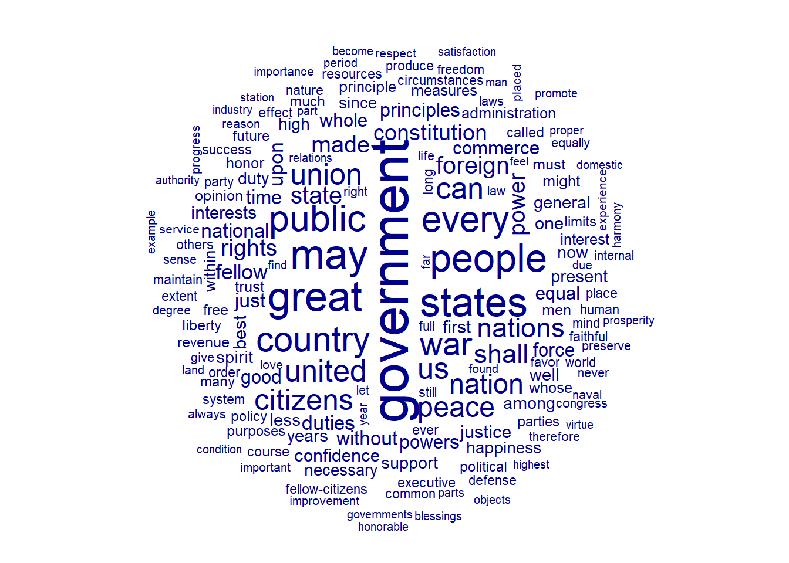
This word cloud visualizes the most frequently used words in US presidential inaugural speeches from 1789 to 1826 (early presidents including Washington, Adams, Jefferson, Madison, Monroe, and John Quincy Adams).
Most prominent words (largest size = highest frequency):
government: The most frequently used word, reflecting the focus on establishing and defining the new government system.
people, states, country, united: Core concepts emphasizing national unity and the role of citizens.
public, great, nation: Words highlighting the importance of public service and national identity.
Key themes identified:
Governance and Constitution: “government”, “constitution”, “union”, “laws”, “powers”, “administration” - Early presidents emphasized the importance of constitutional governance.
National Unity: “united”, “states”, “union”, “nation”, “country” - Reflecting the priority of keeping the young nation together.
Peace and Foreign Relations: “peace”, “war”, “foreign”, “nations”, “commerce” - Addressing both domestic stability and international relationships.
Principles and Duties: “principles”, “duties”, “honor”, “trust”, “confidence” - Reflecting the moral language common in early American political discourse.
Note: This analysis only includes speeches up to 1826 (Year <= 1826), representing the founding era of American democracy.
This word cloud uses the comparison = TRUE parameter, where each word’s color indicates which president used that word with the highest relative frequency in their inaugural address.
Bush (light blue/cyan): - High-frequency words: “freedom”, “nation”, “america”, “liberty”, “free”, “hope”, “justice”, “story”, “history” - Bush’s speeches center on freedom as a core theme (“freedom”, “liberty”, “free”), along with historical narrative (“story”, “history”) and hope (“hope”)
Trump (green): - High-frequency words: “america”, “thank”, “nation”, “country”, “back”, “never”, “government”, “bring” - Trump’s distinctive features include frequent use of “thank”, emphasis on restoration (“back”), and critical language toward government
Note: Many words like “america”, “nation”, and “people” are commonly used by all three presidents, but are assigned to the president with the highest relative proportion.
This word cloud displays the same data as the first word cloud (inaugural speeches from 1789-1826), but with multiple colors to enhance visual distinction between words. The colors are assigned randomly and do not represent different categories or presidents.
Most prominent words (largest size = highest frequency):
government (purple): The dominant word, appearing most frequently in early presidential speeches.
states, peace, war (red/orange): Key terms reflecting concerns about national unity and international relations.
people, country, public (orange/red): Emphasizing democratic ideals and civic responsibility.
great, every, us, may (yellow/orange): Common words used in political rhetoric.
Note: Unlike the comparison word cloud, this visualization uses min_count = 10, meaning only words appearing at least 10 times are displayed. The six colors (red, pink, green, purple, orange, blue) are used purely for visual variety, not to indicate any categorical distinction.
Lexical Dispersion Plot: “American”
data_corpus_inaugural_subset <-corpus_subset(data_corpus_inaugural, Year >1949)kwic(tokens(data_corpus_inaugural_subset), pattern ="american") %>%textplot_xray()
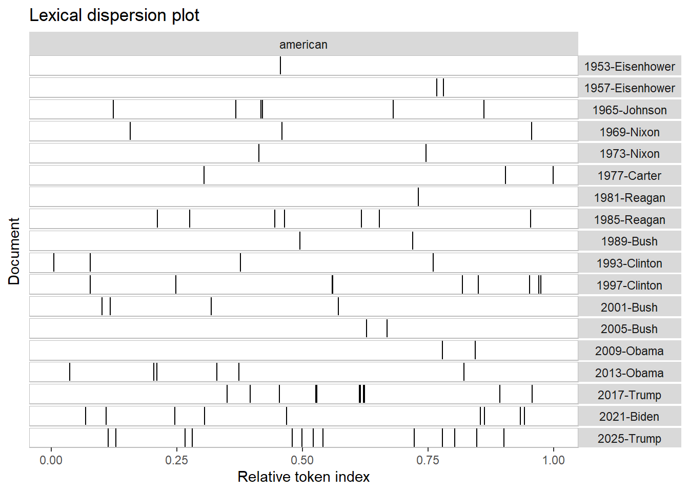
This lexical dispersion plot (also called an x-ray plot) shows where the word “american” appears within each presidential inaugural speech from 1953 to 2025. Each vertical line represents one occurrence of the word, and the x-axis shows the relative position within the speech (0.00 = beginning, 1.00 = end).
How to read this plot:
- Each row represents one inaugural speech (labeled by Year-President)
- Vertical black lines indicate where “american” appears in the speech
- More lines = more frequent use of the word
- Spread of lines shows whether the word is used throughout or concentrated in certain parts
Key observations:
High frequency users (many vertical lines):
- 2025-Trump: 15 occurrences, distributed across the speech
- 2017-Trump: 12 occurrences, with concentration in the middle section
- 2021-Biden: 10 occurrences, spread throughout the speech
- 1997-Clinton: 8 occurrences, distributed from middle to end
- 1985-Reagan: 6 occurrences, spread across the speech
Low frequency users (few vertical lines):
- 1953-Eisenhower: Only 1 occurrence
- 1977-Carter: 3 occurrences
- 1969-Nixon and 1973-Nixon: 2 occurrences each
Trend over time: More recent presidents (Clinton, Bush, Obama, Trump, Biden) tend to use “american” more frequently than earlier presidents (Eisenhower, Nixon, Carter), suggesting an increasing emphasis on American identity in modern political rhetoric.
Lexical Dispersion Plot: “American” vs “People” vs “Communist”
This lexical dispersion plot compares the distribution of two words — “american” and “people” — across presidential inaugural speeches from 1953 to 2025. The plot is divided into two panels (left: “american”, right: “people”). Note: We also attempted to visualize “communist”, but this word does not appear in any of the inaugural speeches, so no panel is displayed for it.
Key observations:
“People” (right panel) — Most frequently used (164 total occurrences):
- Almost every president uses “people” multiple times throughout their speeches
- High frequency users: 1985-Reagan (16), 1969-Nixon (14), 1993-Clinton (12), 1997-Clinton (11), 2013-Obama (11)
- Low frequency users: 1961-Kennedy (1), 2001-Bush (1)
- The word appears distributed across entire speeches, indicating it’s a fundamental term in presidential rhetoric
“American” (left panel) — Moderate usage (87 total occurrences):
- Usage varies significantly between presidents
- High frequency: 2025-Trump (15), 2017-Trump (12), 2021-Biden (10), 1997-Clinton (8)
- Low frequency: 1953-Eisenhower (1), 1961-Kennedy (0), 1973-Nixon (2)
- Modern presidents tend to use “american” more frequently than earlier ones
Comparison insights:
Word
Total Occurrences
Average per Speech
people
164
~8.6
american
87
~4.6
Interpretation: “People” is a universal, high-frequency term across all presidents, while “american” shows an increasing trend over time, with recent presidents (Trump, Biden) using it more frequently than earlier ones (Eisenhower, Kennedy, Nixon).
Colored Lexical Dispersion Plot: “American” (Blue) vs “People” (Red) vs “Communist” (Green)
This plot is the same analysis as the previous one, but with colors added for better visual distinction: “american” in blue, “people” in red, and “communist” in green.
Why is the “communist” plot missing?
The word “communist” does not appear in any presidential inaugural speech from 1953 to 2025. Even though the code includes pattern = "communist" with green color assigned, there are no green lines in the plot because:
Inaugural speeches are ceremonial: Presidents focus on unity, hope, and positive vision rather than attacking adversaries
Diplomatic language: Even during the Cold War, presidents avoided directly naming “communist” as it could escalate tensions
Rhetorical strategy: Instead of negative terms, presidents use positive framing like “freedom” and “democracy”
Comparison: “American” (Blue) vs “People” (Red)
Aspect
“American” (Blue)
“People” (Red)
Frequency
Moderate, varies by president
High, consistent across all
Distribution
Often clustered in specific sections
Spread throughout speeches
Trend
Increasing in modern speeches
Stable over time
Presidents with notable usage patterns:
- 2025-Trump: Highest “american” usage (13), moderate “people” (8)
- 2017-Trump: High “american” (11), balanced “people” (10)
- 1985-Reagan: Highest “people” usage (16), moderate “american” (7)
- 1997-Clinton: High usage of both terms (9 and 11)
- 1969-Nixon: High “people” (14), low “american” (3)
Key insight: The absence of “communist” (green) demonstrates that presidential inaugural addresses maintain a positive, unifying tone rather than identifying external enemies, even during periods of significant geopolitical tension.
Word Frequency Plot (Top 100 Words, 1789-1826)
library(quanteda.textstats)features_dfm_inaug <-textstat_frequency(dfm_inaug, n =100)# Sort by reverse frequency orderfeatures_dfm_inaug$feature <-with(features_dfm_inaug, reorder(feature, -frequency))ggplot(features_dfm_inaug, aes(x = feature, y = frequency)) +geom_point() +theme(axis.text.x =element_text(angle =90, hjust =1))
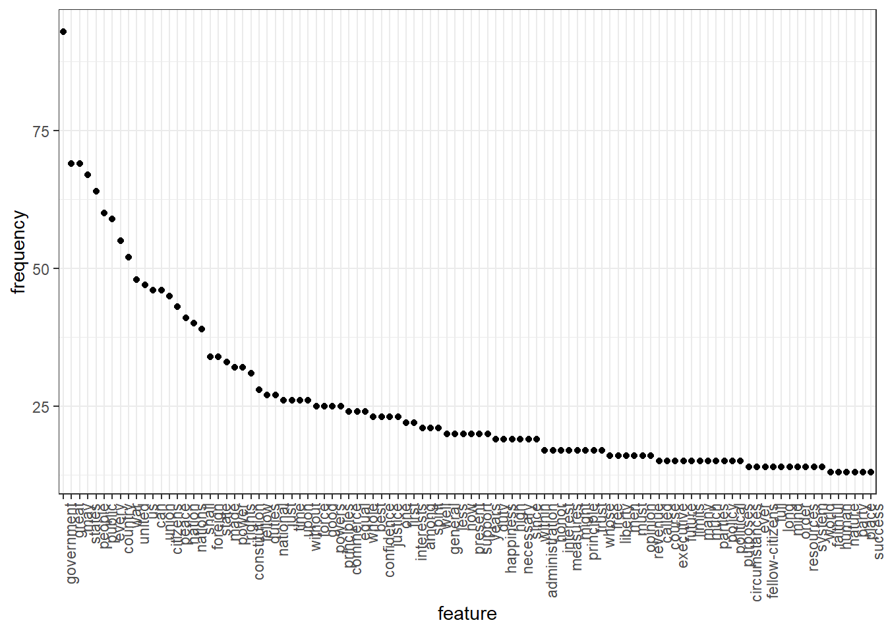
This scatter plot displays the frequency of the top 100 most common words in presidential inaugural speeches from 1789 to 1826. Words are arranged from highest to lowest frequency (left to right).
Distribution pattern:
The plot shows a typical Zipf’s Law distribution — a small number of words appear very frequently, while most words appear relatively rarely. The curve drops steeply at first, then flattens out (long tail).
Top frequency words (frequency > 50):
Rank
Word
Frequency
1
government
93
2
may
69
2
great
69
4
states
67
5
people
64
6
public
60
7
every
59
8
country
55
9
war
52
10
united
48
Mid-frequency words (frequency 25-50):
- us (47), can (46), union (46), citizens (45), peace (43), nation (41), nations (40)
- shall (39), foreign (34), state (34), power (32), rights (32), constitution (31)
- These represent important political and governance concepts
Lower frequency words (frequency < 25):
- happiness (19), administration (17), liberty (16), executive (15), fellow-citizens (14), success (13)
- More specific terms that appear less often but still significant
Key insight: The dominance of “government” (93 occurrences) reflects the primary concern of early presidents: establishing and legitimizing the new federal government system. Words like “states” (67), “union” (46), and “constitution” (31) further emphasize the focus on national structure and unity during the founding era.
Frequency of “American” by President (1949-2025)
# Get frequency grouped by presidentfreq_grouped <-textstat_frequency(dfm(tokens(data_corpus_inaugural_subset)), groups = data_corpus_inaugural_subset$President)# Filter the term "american"freq_american <-subset(freq_grouped, freq_grouped$feature %in%"american") ggplot(freq_american, aes(x = group, y = frequency)) +geom_point() +xlab(NULL) +ylab("Frequency") +theme(axis.text.x =element_text(angle =90, hjust =1))
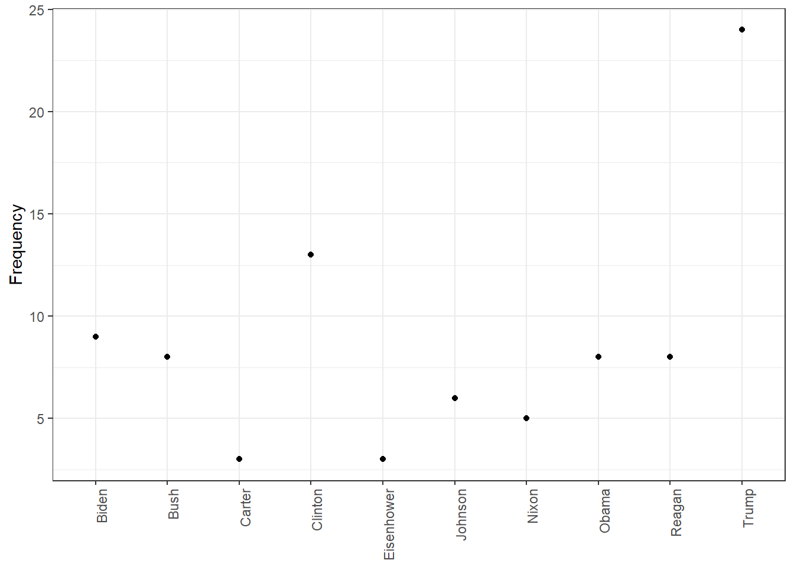
This plot shows how many times each president used the word “american” in their inaugural speech(es). Note that some presidents served two terms and gave two inaugural addresses, which may affect their total count.
Frequency ranking:
President
Frequency
Observation
Trump
24
Highest usage
Clinton
13
Second highest
Biden
9
Third highest
Bush
8
(Two terms combined)
Obama
8
(Two terms combined)
Reagan
8
(Two terms combined)
Johnson
6
Moderate usage
Nixon
5
(Two terms combined)
Carter
3
Low usage
Eisenhower
3
Low usage
Key observations:
Trump used “american” most frequently (24 times), nearly double the second-highest user (Clinton with 13). This reflects his emphasis on American identity and nationalism in his inaugural rhetoric.
Clinton ranks second (13 times), showing strong emphasis on American identity in his speeches.
Bush, Obama, and Reagan tied at 8 occurrences each, despite all serving two terms with two inaugural addresses.
Cold War era presidents (Eisenhower, Nixon, Carter) used “american” less frequently (3-5 times).
General trend: More recent presidents (Trump, Clinton, Biden) tend to use “american” more frequently than earlier presidents (Eisenhower, Nixon, Carter).
Note: This analysis counts only the exact word “american” (case-insensitive). Related terms like “America”, “Americans”, or “America’s” are counted separately.
Relative Frequency of “American” by President (1949-2025)
Document-feature matrix of: 6 documents, 4,625 features (86.44% sparse) and 4 docvars.
features
docs my friends , before i
1953-Eisenhower 0.14582574 0.14582574 4.593511 0.1822822 0.10936930
1957-Eisenhower 0.20975354 0.10487677 6.345045 0.1573152 0.05243838
1961-Kennedy 0.19467878 0.06489293 5.451006 0.1297859 0.32446463
1965-Johnson 0.17543860 0.05847953 5.555556 0.2339181 0.87719298
1969-Nixon 0.28973510 0 5.546358 0.1241722 0.86920530
1973-Nixon 0.05012531 0.05012531 4.812030 0.2005013 0.60150376
features
docs begin the expression of those
1953-Eisenhower 0.03645643 6.234050 0.03645643 5.176814 0.1458257
1957-Eisenhower 0 5.977976 0 5.034085 0.1573152
1961-Kennedy 0.19467878 5.580792 0 4.218040 0.4542505
1965-Johnson 0 4.502924 0 3.333333 0.1754386
1969-Nixon 0 5.629139 0 3.890728 0.4552980
1973-Nixon 0 4.160401 0 3.408521 0.3007519
[ reached max_nfeat ... 4,615 more features ]
rel_freq <-textstat_frequency(dfm_rel_freq, groups = dfm_rel_freq$President)# Filter the term "american"rel_freq_american <-subset(rel_freq, feature %in%"american") ggplot(rel_freq_american, aes(x = group, y = frequency)) +geom_point() +xlab(NULL) +ylab("Relative frequency") +theme(axis.text.x =element_text(angle =90, hjust =1))
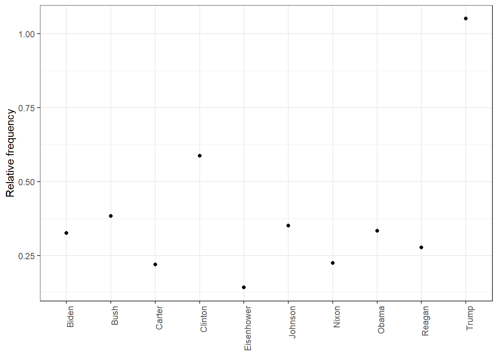
This plot shows the relative frequency (percentage of total words) of “american” in each president’s inaugural speech(es). Unlike the previous plot that showed raw counts, this controls for speech length — a fairer comparison since some speeches are longer than others.
Why use relative frequency? - Raw frequency can be misleading: a longer speech naturally has more words - Relative frequency = (word count / total words) × 100 - This shows the proportion of the speech devoted to a particular word
Relative frequency ranking:
President
Relative Frequency (%)
Interpretation
Trump
1.05%
Highest emphasis on “american”
Clinton
0.59%
Second highest
Bush
0.38%
Strong emphasis
Johnson
0.35%
Above average
Obama
0.33%
Above average
Biden
0.33%
Above average
Reagan
0.28%
Moderate
Nixon
0.22%
Below average
Carter
0.22%
Below average
Eisenhower
0.14%
Lowest emphasis
Key observations:
Trump ranks highest with 1.05%, nearly double the second-highest (Clinton at 0.59%). This confirms his strong emphasis on American identity and nationalism in his inaugural rhetoric.
Clinton ranks second even after adjusting for speech length, confirming his emphasis on American identity.
Bush moves up in ranking: His relative frequency (0.38%) is higher than some presidents with similar raw counts, meaning “american” made up a larger portion of his speeches.
Eisenhower’s low usage is confirmed: Both raw and relative frequency show he rarely used “american” in his inaugural addresses (0.14%).
Consistent pattern: The relative frequency ranking is similar to the raw frequency ranking, with Trump and Clinton at the top, and Eisenhower at the bottom.
Comparison with raw frequency: This relative measure confirms that Trump’s high usage of “american” is not simply due to longer speeches — he genuinely emphasized this word more than any other president in this dataset.
Top 10 Words by President (2001-2025)
dfm_weight_pres <- data_corpus_inaugural %>%corpus_subset(Year >2000) %>%tokens(remove_punct =TRUE) %>%tokens_remove(stopwords("english")) %>%dfm() %>%dfm_weight(scheme ="prop")# Calculate relative frequency by presidentfreq_weight <-textstat_frequency(dfm_weight_pres, n =10, groups = dfm_weight_pres$President)ggplot(data = freq_weight, aes(x =nrow(freq_weight):1, y = frequency)) +geom_point() +facet_wrap(~ group, scales ="free") +coord_flip() +scale_x_continuous(breaks =nrow(freq_weight):1,labels = freq_weight$feature) +labs(x =NULL, y ="Relative frequency")
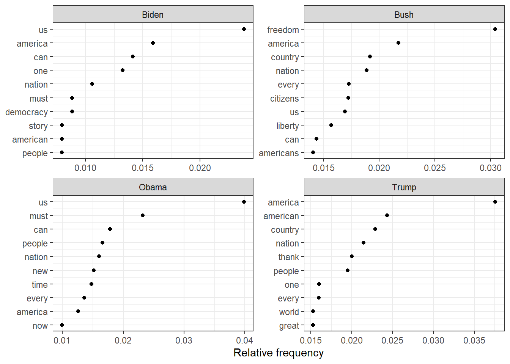
This faceted plot shows the top 10 most frequently used words (by relative frequency) for each of the four 21st-century presidents: Biden, Bush, Obama, and Trump. Stopwords (common words like “the”, “and”, “is”) have been removed.
Key themes: National identity (“america”, “american”, “country”), greatness
Cross-President Comparison:
Theme
Biden
Bush
Obama
Trump
Most used word
us
freedom
us
america
National identity
✓
✓
✓
✓✓ (strongest)
Freedom/Liberty
-
✓✓
-
-
Unity (“us”)
✓✓
✓
✓✓
-
Action words
can, must
can
must, can
-
Key insight: Each president’s word choices reflect their political messaging — Bush emphasized “freedom” (War on Terror era), Obama and Biden emphasized “us” (unity), and Trump emphasized “america/american” (America First).
Keyness Analysis: Trump vs Obama
# Only select speeches by Obama and Trumppres_corpus <-corpus_subset(data_corpus_inaugural, President %in%c("Obama", "Trump"))# Create a dfm grouped by presidentpres_dfm <-tokens(pres_corpus, remove_punct =TRUE) %>%tokens_remove(stopwords("english")) %>%tokens_group(groups = President) %>%dfm()# Calculate keyness and determine Trump as target groupresult_keyness <-textstat_keyness(pres_dfm, target ="Trump")# Plot estimated word keynesstextplot_keyness(result_keyness)
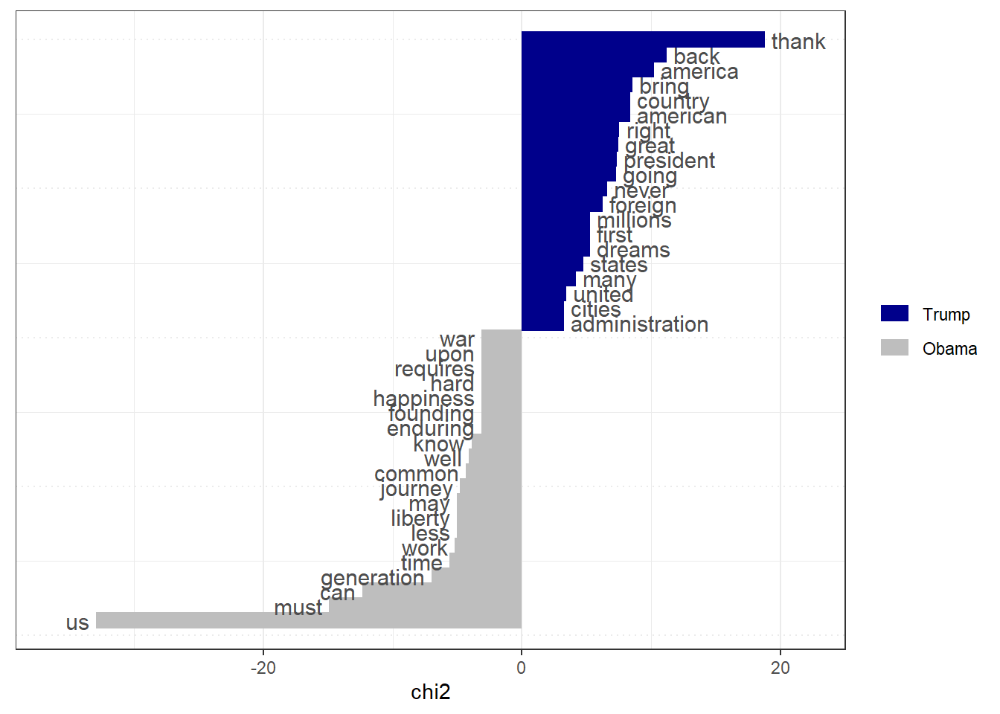
This keyness plot compares the distinctive word usage between Trump (target, blue) and Obama (reference, gray). The chi-squared (χ²) statistic measures how significantly a word is associated with one president over the other.
How to read this plot:
Positive chi² values (right/blue): Words used significantly MORE by Trump than Obama
Negative chi² values (left/gray): Words used significantly MORE by Obama than Trump
Larger bars: Stronger association with that president
Trump’s Distinctive Words (Blue):
Rank
Word
Chi² Value
Trump
Obama
1
thank
18.81
26
3
2
back
11.21
16
2
3
america
10.22
36
14
4
bring
8.55
11
1
5
american
8.37
24
8
6
country
8.37
24
8
7
right
7.56
10
1
8
great
7.47
16
4
9
president
7.36
14
3
10
going
7.28
9
0
Trump’s rhetorical style: Direct, action-oriented, populist messaging with emphasis on restoration (“back”, “bring”) and national pride (“america”, “american”, “great”).
Obama’s Distinctive Words (Gray):
Rank
Word
Chi² Value
Trump
Obama
1
us
-32.93
4
44
2
must
-14.91
4
25
3
can
-12.31
3
20
4
generation
-6.97
0
9
5
time
-5.58
5
16
6
work
-5.20
2
10
7
less
-5.04
0
7
8
liberty
-5.04
0
7
9
may
-5.04
0
7
10
journey
-4.78
1
9
Obama’s rhetorical style: Inclusive, aspirational language emphasizing collective action (“us”, “must”, “can”) and historical continuity (“generation”, “journey”).
Key Contrast:
Aspect
Trump
Obama
Primary pronoun
-
“us” (χ² = -32.93, strongest)
Core theme
Restoration (“back”, “great”)
Progress (“journey”, “generation”)
Tone
Direct, emphatic
Aspirational, inclusive
Focus
National identity
Collective action
Top word
“thank” (χ² = 18.81)
“us” (χ² = -32.93)
Insight: The keyness analysis reveals fundamentally different rhetorical strategies — Trump’s “America First” nationalism versus Obama’s inclusive progressivism. The word “thank” being Trump’s most distinctive word is notable because expressions of gratitude are uncommon in traditional inaugural addresses, reflecting his more personal, campaign-style approach.
Keyness Analysis: Trump’s Distinctive Words Only
# Plot without the reference text (in this case Obama)textplot_keyness(result_keyness, show_reference =FALSE)
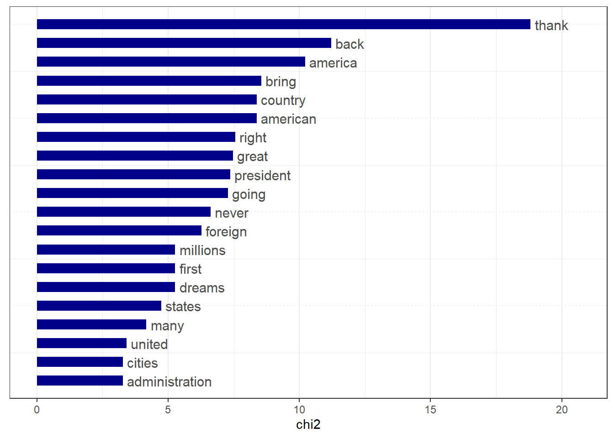
This plot shows only Trump’s distinctive words (without Obama’s reference words), making it easier to focus on what makes Trump’s inaugural speech(es) unique compared to Obama’s.
Trump’s Most Distinctive Words (ranked by chi² value):
Rank
Word
Chi² Value
Trump
Obama
p-value
1
thank
18.81
26
3
<0.001
2
back
11.21
16
2
<0.001
3
america
10.22
36
14
0.001
4
bring
8.55
11
1
0.003
5
american
8.37
24
8
0.004
6
country
8.37
24
8
0.004
7
right
7.56
10
1
0.006
8
great
7.47
16
4
0.006
9
president
7.36
14
3
0.007
10
going
7.28
9
0
0.007
Additional distinctive words:
never (χ² = 6.61), foreign (χ² = 6.27): Emphatic promises, international concerns
dreams, first, millions (χ² = 5.27): Scale, priority, aspirational
states (χ² = 4.74), many (χ² = 4.17): Governance references
Statistically significant words (p < 0.05): 17 words total, including: thank, back, america, bring, american, country, right, great, president, going, never, foreign, dreams, first, millions, states, many
Thematic clusters in Trump’s rhetoric:
Restoration: “back”, “bring”, “great” — returning to a previous state
National identity: “america”, “american”, “country” — strong patriotic emphasis
Gratitude: “thank” — acknowledging supporters (unusual in inaugural addresses)
Scale: “millions”, “foreign”, “states” — emphasizing breadth of impact
Key insight: The word “thank” has the highest keyness score (χ² = 18.81), which is notable because expressions of gratitude are uncommon in traditional inaugural addresses. Trump used “thank” 26 times compared to Obama’s 3 times. This reflects Trump’s more personal, campaign-style approach to the ceremonial speech.
4. What is Wordfish? (Do research on quanteda website)
What is Wordfish?
Wordfish is a method that automatically figures out political positions from text — you don’t need to tell the computer who’s left-wing or right-wing, it discovers this on its own by looking at word patterns.
How does it work?
- It looks at what words each speaker uses and how often
- Then it automatically places speakers on a political spectrum
- Use more “government-side words” → placed on the right
- Use more “opposition-side words” → placed on the left
What does Wordfish calculate?
- θ (theta): Each speaker’s political position (this is what we care about most)
- β (beta): Which side each word leans toward (positive = government, negative = opposition)
- ψ (psi): How common each word is overall
Comparison of Three Text Scaling Methods
Aspect
Wordscores
Wordfish
CA
In one sentence
Teacher gives you the answer key, you grade based on it
Let the computer find patterns on its own
Simplify complex data into fewer dimensions
Type
Supervised
Unsupervised
Unsupervised
Need reference texts?
Yes (must specify who is left/right first)
No
No
How it works
Calculate based on known reference documents
Use statistical model to estimate automatically
Dimensionality reduction (like compressing 3D → 2D)
Provides confidence intervals?
Yes
Yes
No
Advantage
Simple and easy to understand
No need to know the answer beforehand
Good for visualization
Disadvantage
Must have reference documents
Math is more complex
Can’t know how accurate the estimate is
When to Use Which Method?
Wordscores: When you already know some documents’ positions (e.g., Party A = left, Party B = right) and want to estimate others
Wordfish: When you don’t know who’s left or right, and want the computer to figure it out
CA: When you want to explore data and visualize the overall distribution
Practical Analysis - Irish Budget Speeches 2010
Wordscores Model
library(quanteda.textmodels)# Irish budget speeches from 2010 (data from quanteda.textmodels)# Transform corpus to dfmdata(data_corpus_irishbudget2010, package ="quanteda.textmodels")ie_dfm <-dfm(tokens(data_corpus_irishbudget2010))# Set reference scoresrefscores <-c(rep(NA, 4), 1, -1, rep(NA, 8))# Predict Wordscores modelws <-textmodel_wordscores(ie_dfm, y = refscores, smooth =1)# Plot estimated word positions (highlight words and print them in red)textplot_scale1d(ws,highlighted =c("minister", "have", "our", "budget"), highlighted_color ="red")
What is Wordscores?
Wordscores is a supervised text scaling method that:
1. Uses reference texts with known positions (in this case: Cowen (FF) = 1, Kenny (FG) = -1)
2. Assigns scores to each word based on how often it appears in reference texts
3. Predicts positions of unknown texts based on their word usage
How to read this plot:
X-axis (Word score): Political position from -1 (opposition/Fine Gael) to +1 (government/Fianna Fáil)
Y-axis (Log term frequency): How often the word appears (higher = more frequent)
Red highlighted words: Selected words of interest
Highlighted words analysis:
Word
Score
Interpretation
our
0.69
Strongly associated with government rhetoric (inclusive, ownership language)
have
0.15
Slightly government-leaning, neutral
budget
-0.15
Slightly opposition-leaning
minister
-0.49
Associated with opposition (addressing/criticizing ministers)
Words most associated with Government (score close to +1):
Word
Score
economy
0.89
2010
0.87
investment
0.86
confidence
0.82
development
0.81
employment
0.81
scheme
0.80
future
0.80
measures
0.78
support
0.78
Words most associated with Opposition (score close to -1):
Word
Score
taoiseach
-0.93
he
-0.88
his
-0.85
bank
-0.84
young
-0.82
opportunity
-0.82
may
-0.77
april
-0.72
said
-0.72
hope
-0.72
Pattern observations:
Common words cluster at center-top: Frequent words like “the”, “of”, “to”, “and” appear at the top center, as they’re used equally by both sides
Government words focus on economy: Words like “economy”, “investment”, “development”, “employment” suggest positive economic framing
Opposition words focus on criticism: Words like “taoiseach”, “he”, “his”, “bank” suggest direct criticism of government leadership and banking policy
“our” vs “minister”:
Government speakers use “our” (score = 0.69) — inclusive, ownership language
Opposition speakers address “minister” (score = -0.49) — accountability, criticism
Key insight: The Wordscores model reveals that seemingly neutral words carry political weight. Government rhetoric emphasizes economic progress (“economy”, “investment”, “confidence”), while opposition rhetoric focuses on accountability and criticism (“taoiseach”, “bank”, “minister”) — patterns that reflect the dynamics of parliamentary debate during the 2010 Irish budget crisis.
Wordscores Document Positions
# Get predictionspred <-predict(ws, se.fit =TRUE)# Plot estimated document positions and group by "party" variabletextplot_scale1d(pred, margin ="documents",groups =docvars(data_corpus_irishbudget2010, "party"))
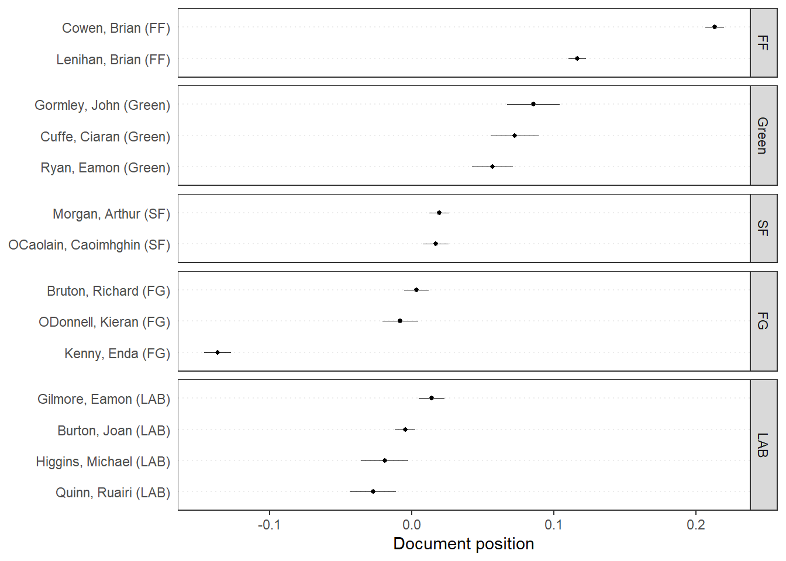
This plot shows the predicted political positions of each speaker in the 2010 Irish budget debate, grouped by their party affiliation. The positions are estimated using the Wordscores model based on the words each speaker used.
How to read this plot:
X-axis (Document position): Political scale from negative (opposition) to positive (government)
Horizontal lines: Confidence intervals (uncertainty in the estimate)
Dots: Estimated position for each speaker
Panels: Grouped by party
Predicted positions by speaker:
Speaker
Party
Score
SE
Position
Cowen, Brian
FF
0.213
0.003
Most government
Lenihan, Brian
FF
0.116
0.003
Government
Gormley, John
Green
0.086
0.009
Government (coalition)
Cuffe, Ciaran
Green
0.072
0.009
Government (coalition)
Ryan, Eamon
Green
0.057
0.007
Government (coalition)
Morgan, Arthur
SF
0.019
0.004
Near center
OCaolain, Caoimhghin
SF
0.017
0.005
Near center
Gilmore, Eamon
LAB
0.014
0.005
Near center
Bruton, Richard
FG
0.003
0.004
Near center
Burton, Joan
LAB
-0.005
0.004
Slight opposition
ODonnell, Kieran
FG
-0.008
0.006
Slight opposition
Higgins, Michael
LAB
-0.019
0.008
Opposition
Quinn, Ruairi
LAB
-0.027
0.008
Opposition
Kenny, Enda
FG
-0.137
0.005
Most opposition
Party summary:
Party
Average Score
Role
Interpretation
FF (Fianna Fáil)
0.165
Government (ruling party)
Strongest pro-government language
Green
0.071
Government (coalition partner)
Moderate pro-government language
SF (Sinn Féin)
0.018
Opposition
Near center, moderate rhetoric
LAB (Labour)
-0.009
Opposition
Slightly opposition-leaning
FG (Fine Gael)
-0.047
Opposition
Most opposition-leaning overall
Key observations:
FF (Fianna Fáil) — Governing party members (Cowen at 0.213, Lenihan at 0.116) are positioned furthest right, reflecting pro-government language defending the budget.
Green Party — As coalition partners with FF, all three members (Gormley, Cuffe, Ryan) are positioned on the government side (0.057-0.086) but closer to center than FF, showing more moderate support.
Fine Gael (FG) — Shows the most variation within a party:
Kenny, Enda has the most negative position (-0.137), indicating strongest opposition rhetoric
Bruton, Richard (0.003) and ODonnell, Kieran (-0.008) are much closer to center
Labour (LAB) — Members spread from slightly positive (Gilmore at 0.014) to negative (Quinn at -0.027), indicating varied opposition stances.
Sinn Féin (SF) — Both members cluster near zero (0.017-0.019), indicating moderate, centrist rhetoric despite being an opposition party.
Model validation: The Wordscores model successfully separates government speakers (FF, Green with positive scores) from opposition speakers (FG, LAB with negative or near-zero scores) based purely on word usage, demonstrating how language reflects political position.
Wordscores with LBG Transformation
# Plot estimated document positions using the LBG transformation and group by "party" variablepred_lbg <-predict(ws, se.fit =TRUE, rescaling ="lbg")textplot_scale1d(pred_lbg, margin ="documents",groups =docvars(data_corpus_irishbudget2010, "party"))
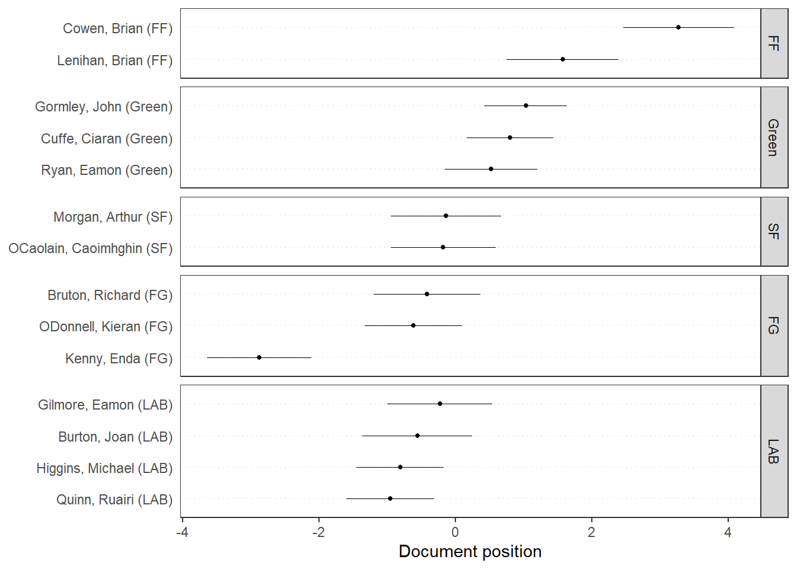
This plot shows the same Wordscores analysis as the previous plot, but with LBG (Laver, Benoit, Garry) transformation applied. This rescaling method adjusts the predicted positions to better reflect the true spread of political positions.
What is LBG transformation?
The LBG transformation addresses a known issue with Wordscores: raw predictions tend to cluster toward the center. The LBG rescaling: - Expands the scale to show greater differentiation - Makes positions more comparable to the original reference scores - Allows predictions to exceed the original reference range (-1 to +1)
Predicted positions with LBG rescaling:
Speaker
Party
LBG Score
Position
Cowen, Brian
FF
3.27
Most pro-government
Lenihan, Brian
FF
1.57
Pro-government
Gormley, John
Green
1.03
Government (coalition)
Cuffe, Ciaran
Green
0.80
Government (coalition)
Ryan, Eamon
Green
0.52
Government (coalition)
Morgan, Arthur
SF
-0.14
Mild opposition
OCaolain, Caoimhghin
SF
-0.18
Mild opposition
Gilmore, Eamon
LAB
-0.23
Mild opposition
Bruton, Richard
FG
-0.42
Opposition
Burton, Joan
LAB
-0.56
Opposition
ODonnell, Kieran
FG
-0.62
Opposition
Higgins, Michael
LAB
-0.81
Opposition
Quinn, Ruairi
LAB
-0.96
Opposition
Kenny, Enda
FG
-2.88
Most opposition
Comparison: Raw vs LBG Transformation
Aspect
Raw Wordscores (Previous)
LBG Transformation (This plot)
Scale range
-0.14 to +0.21
-2.88 to +3.27
Differentiation
Compressed, subtle
Expanded, clearer
Confidence intervals
Narrow
Wider
Interpretation
Harder to distinguish
Easier to distinguish
Party summary with LBG rescaling:
Party
Score Range
Average
Interpretation
FF (Fianna Fáil)
+1.57 to +3.27
2.42
Strongly pro-government
Green
+0.52 to +1.03
0.78
Moderate, coalition partner
SF (Sinn Féin)
-0.18 to -0.14
-0.16
Mild opposition
LAB (Labour)
-0.96 to -0.23
-0.64
Moderate opposition
FG (Fine Gael)
-2.88 to -0.42
-1.31
Opposition (varies widely)
Key observations:
Greater separation: The LBG transformation makes the gap between government (FF at +1.57 to +3.27) and opposition (FG at -2.88 to -0.42) much clearer.
Cowen’s dominance: Brian Cowen (FF) has the highest score (+3.27), far exceeding the original reference score of +1, reflecting extremely strong pro-budget rhetoric.
Kenny’s strong opposition: Enda Kenny (FG) shows the most extreme opposition position (-2.88), nearly three times the original reference score of -1, consistent with his role as opposition leader.
Green Party as middle ground: All Green members (0.52 to 1.03) fall between the governing FF and zero, reflecting their position as coalition partners with more moderate language.
Labour variation: LAB members range from -0.23 (Gilmore) to -0.96 (Quinn), showing varied levels of opposition rhetoric within the party.
When to use LBG transformation: Use LBG when you want to see the full spread of political positions, especially when raw Wordscores predictions are too compressed to interpret clearly. The LBG transformation better reveals speakers who are more extreme than the reference texts.
This plot shows the results of a Wordfish model applied to the 2010 Irish budget speeches. Unlike Wordscores (supervised), Wordfish is an unsupervised text scaling method that estimates word and document positions simultaneously without requiring reference texts.
What is Wordfish?
Wordfish is a scaling model that:
- Estimates political positions from word frequencies alone (no reference texts needed)
- Assumes word usage follows a Poisson distribution
- Produces two parameters for each word: beta (position) and psi (frequency)
How to read this plot:
X-axis (Estimated beta): Word’s political position (negative = opposition, positive = government)
Y-axis (Estimated psi): Word’s overall frequency (higher = more common)
Red highlighted words: Selected words of interest
Highlighted words analysis:
Word
Beta (Position)
Psi (Frequency)
Interpretation
the
~0.0
~4.5 (highest)
Neutral, most frequent word
government
~0.0
~2.8
Central topic, used by all
economy
~0.3
~2.5
Slightly government-side
children
~-0.5
~0.5
Slightly opposition-side
deficit
~0.8
~0.3
Government-side (defending budget)
bank
~-1.5
~0.0
Opposition-side (criticizing banks)
global
~1.5
~-2.5
Government-side (global context)
citizenship
~-3.5
~-3.0
Strong opposition (rare word)
productivity
~2.5
~-4.0
Strong government (rare word)
Pattern observations:
Triangular shape: Common words cluster at top-center; rare words spread to extremes
Frequent neutral words (the, government) → top center
Rare partisan words → bottom left/right corners
Opposition words (left/negative beta):
“bank”, “citizenship” — criticism of financial sector, social issues
Associated with opposition rhetoric
Government words (right/positive beta):
“deficit”, “global”, “productivity” — economic justification language
Used to defend budget decisions
Neutral/shared words (center):
“the”, “government”, “economy” — used equally by both sides
Key insight: Wordfish reveals that politically charged, rare words carry the most discriminating power. Common words like “the” and “government” are neutral, while specific policy terms like “productivity” (government) and “citizenship” (opposition) mark distinct political positions.
This plot shows the estimated political positions (theta) of each speaker in the 2010 Irish budget debate using the Wordfish model. Unlike Wordscores, Wordfish estimates these positions without requiring reference texts.
How to read this plot:
X-axis (Estimated theta): Political position scale (negative = opposition, positive = government)
Horizontal lines: Confidence intervals
Dots: Estimated position for each speaker
Panels: Grouped by party
Predicted positions by speaker:
Speaker
Party
Theta
SE
Position
Lenihan, Brian
FF
1.82
0.020
Most pro-government
Cowen, Brian
FF
1.77
0.023
Pro-government
Gormley, John
Green
1.19
0.073
Government (coalition)
Cuffe, Ciaran
Green
0.76
0.073
Government (coalition)
Ryan, Eamon
Green
0.19
0.063
Near center
Morgan, Arthur
SF
-0.13
0.028
Mild opposition
OCaolain, Caoimhghin
SF
-0.19
0.036
Mild opposition
ODonnell, Kieran
FG
-0.49
0.041
Opposition
Gilmore, Eamon
LAB
-0.56
0.029
Opposition
Bruton, Richard
FG
-0.60
0.028
Opposition
Kenny, Enda
FG
-0.72
0.026
Opposition
Quinn, Ruairi
LAB
-0.96
0.039
Strong opposition
Higgins, Michael
LAB
-0.97
0.038
Strong opposition
Burton, Joan
LAB
-1.10
0.015
Most opposition
Party summary:
Party
Theta Range
Average
Role
FF (Fianna Fáil)
+1.77 to +1.82
1.79
Government (ruling party)
Green
+0.19 to +1.19
0.71
Government (coalition partner)
SF (Sinn Féin)
-0.19 to -0.13
-0.16
Mild opposition
FG (Fine Gael)
-0.72 to -0.49
-0.60
Opposition
LAB (Labour)
-1.10 to -0.56
-0.90
Opposition (most negative)
Key observations:
Clear government-opposition divide: Wordfish successfully separates FF (theta ~1.8) from opposition parties (theta < 0) without any reference texts.
FF positioned furthest right: Lenihan (1.82) and Cowen (1.77) show the strongest pro-government language, consistent with their roles as Finance Minister and Taoiseach.
Green Party variation:
Gormley (1.19) and Cuffe (0.76) align strongly with government coalition
Ryan (0.19) positioned much closer to center, suggesting more moderate language or internal party differences
Labour most oppositional: All Labour members show negative theta, with Burton (-1.10) showing the strongest opposition rhetoric, followed by Higgins (-0.97) and Quinn (-0.96).
Sinn Féin near center: Both SF members (Morgan at -0.13, OCaolain at -0.19) cluster near zero, indicating more moderate or centrist rhetoric compared to FG and LAB.
Fine Gael moderate opposition: FG members range from -0.49 to -0.72, positioned between SF and LAB.
Comparison: Wordfish vs Wordscores (LBG)
Speaker
Wordfish Theta
Wordscores LBG
Consistent?
Cowen (FF)
1.77
3.27
✓ Both highest
Lenihan (FF)
1.82
1.57
✓ Both high
Burton (LAB)
-1.10
-0.56
✓ Both opposition
Kenny (FG)
-0.72
-2.88
✓ Both opposition
Both methods produce similar party orderings (FF > Green > SF > FG > LAB), validating the results. Wordfish achieves this without pre-defined reference scores, demonstrating the robustness of the political dimension in Irish budget debates.
Correspondence Analysis
# Transform corpus to dfmie_dfm <-dfm(tokens(data_corpus_irishbudget2010))# Run correspondence analysis on dfmca <-textmodel_ca(ie_dfm)# Plot estimated positions and group by partytextplot_scale1d(ca, margin ="documents",groups =docvars(data_corpus_irishbudget2010, "party"))
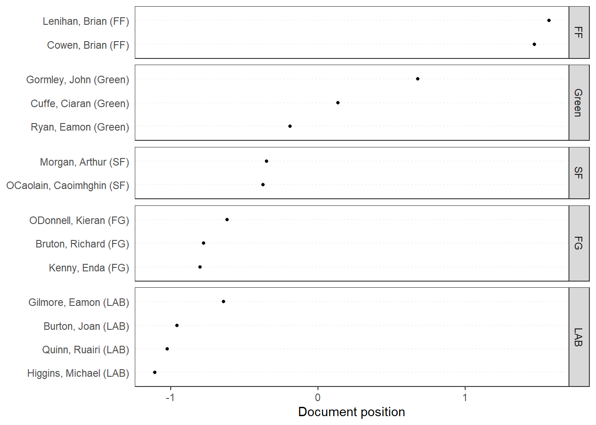
This plot shows the estimated political positions of each speaker using Correspondence Analysis (CA), another unsupervised text scaling method. CA is a multivariate technique that reduces high-dimensional word frequency data to reveal underlying patterns.
What is Correspondence Analysis?
Correspondence Analysis:
- Is an unsupervised dimensionality reduction technique (similar to PCA for categorical data)
- Finds associations between documents and words
- Does not require reference texts or assumptions about word distributions
- Projects documents onto a scale based on word usage patterns
Predicted positions by speaker (Dimension 1):
Speaker
Party
Dim1
Position
Lenihan, Brian
FF
1.57
Most pro-government
Cowen, Brian
FF
1.47
Pro-government
Gormley, John
Green
0.68
Government (coalition)
Cuffe, Ciaran
Green
0.14
Near center
Ryan, Eamon
Green
-0.19
Near center
Morgan, Arthur
SF
-0.35
Mild opposition
OCaolain, Caoimhghin
SF
-0.37
Mild opposition
ODonnell, Kieran
FG
-0.62
Opposition
Gilmore, Eamon
LAB
-0.64
Opposition
Bruton, Richard
FG
-0.78
Opposition
Kenny, Enda
FG
-0.80
Opposition
Burton, Joan
LAB
-0.96
Strong opposition
Quinn, Ruairi
LAB
-1.03
Strong opposition
Higgins, Michael
LAB
-1.11
Most opposition
Party summary:
Party
Dim1 Range
Average
Role
FF (Fianna Fáil)
+1.47 to +1.57
1.52
Government (ruling party)
Green
-0.19 to +0.68
0.21
Government (coalition partner)
SF (Sinn Féin)
-0.37 to -0.35
-0.36
Mild opposition
FG (Fine Gael)
-0.80 to -0.62
-0.73
Opposition
LAB (Labour)
-1.11 to -0.64
-0.93
Opposition (most negative)
Key observations:
No confidence intervals: Unlike Wordscores and Wordfish, CA does not provide uncertainty estimates (no horizontal lines in the plot).
FF clearly on government side: Lenihan (1.57) and Cowen (1.47) are positioned furthest right, consistent with their roles as Finance Minister and Taoiseach.
Green Party variation:
Gormley (0.68) positioned closest to FF among Greens
Ryan (-0.19) positioned on the opposition side, showing internal party variation
Labour most oppositional: All Labour members show strongly negative positions, with Higgins (-1.11) being the most extreme, followed by Quinn (-1.03) and Burton (-0.96).
Sinn Féin near center: Both SF members cluster around -0.36, more moderate than FG and LAB.
Summary
Comparison of three text scaling methods:
Speaker
Wordscores (LBG)
Wordfish
CA
Lenihan (FF)
1.57
1.82
1.57
Cowen (FF)
3.27
1.77
1.47
Gormley (Green)
1.03
1.19
0.68
Burton (LAB)
-0.56
-1.10
-0.96
Higgins (LAB)
-0.81
-0.97
-1.11
Kenny (FG)
-2.88
-0.72
-0.80
Party ordering is consistent across all methods: FF > Green > SF > FG > LAB
Method comparison:
Method
Type
Reference Needed
Uncertainty
Key Feature
Wordscores
Supervised
Yes
Yes (SE)
Uses known reference texts
Wordfish
Unsupervised
No
Yes (SE)
Assumes Poisson distribution
CA
Unsupervised
No
No
Dimensionality reduction
Conclusion: All three methods consistently identify the government-opposition divide in Irish parliamentary debate, validating the robustness of text-based political scaling. The consistent ordering (FF > Green > SF > FG > LAB) across supervised and unsupervised methods demonstrates that political positions are clearly reflected in word usage patterns.